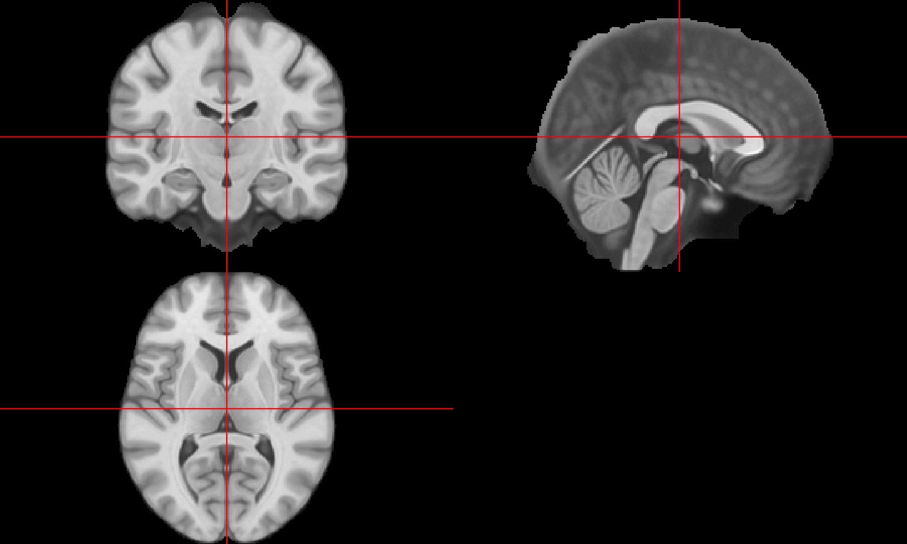
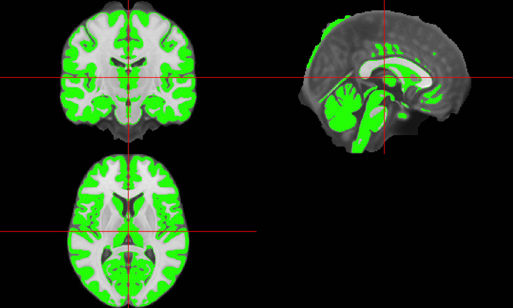

Problem: images are 3D: brain
How big is a brain?
- Image dimensions are: \(197\times233\times189\)
- plotting functions are based on
graphics::image(non-rastered)
- plotting functions are based on

Explore results: e.g. gray matter segmentation

Let's make it interactive!
- Are static graphics (e.g. PDFs) good enough?

image from http://cheezburger.com
Let's make it interactive!
Are static graphics (e.g. PDFs/GIFs) good enough?
- What step in the analysis does it come in? For me:
- exploratory - looking at areas of the brain in processing
- Asking: "Is this step working?"

http://www.natashaboyd.com/uploads/1/5/5/3/15536518/5572229_orig.gif
{kind=link}
Let's make it interactive!
Are static graphics (e.g. PDFs/GIFs) good enough?
- What step in the analysis does it come in? For me:
- confirmatory - check model predictions
{kind=link}
But other (standalone) programs can do this!
Also known as "I can do that in X already"
Some (of my) principles of interactivity
- Should be scriptable to get the interactive graphic
- still hard to script/reproduce the interaction
- Should be within the analysis workflow
- Others are just standalone viewers
- Relies on fewer systems/dependencies
- Should be simple for the easy case for the user

First attempt: Use manipulate package
The manipulate package (Allaire 2014) from RStudio can add interactivity:

First attempt: Use manipulate package
The manipulate package (Allaire 2014) from RStudio can add interactivity, BUT:
- Images rendering was slow (due to the R plotting function)
- Only works with RStudio
- Can't be embedded in document
Second attempt: set of PDFs or GIFs!
The animation package (Xie 2013, Xie et al. (2015)) can make GIFs:

Pros:
- Just plotting with regular functions
- Can be embedded into an html easily
Cons:
- Not really "interactive"
- less choice on user's end
- not easy to move back/forward or different view
papayar R package, port of Papaya JS library
library(papayar); papaya(image)
Is it an htmlwidget!?
No
Is it an htmlwidget!?
Not yet.
Lessons learned
- Borrow (heavily) other people's stuff
- Porting to R can help the community
- need some non-R knowledge, usually JavaScript
- not always so straightforward
- Functionality at the whim of the JS maintainer
- htmlwidgets framework is great
- some JS libraries have odd rules
Bibliography
Allaire, JJ. 2014. Manipulate: Interactive Plots for RStudio. https://CRAN.R-project.org/package=manipulate.
Xie, Yihui. 2013. “animation: An R Package for Creating Animations and Demonstrating Statistical Methods.” Journal of Statistical Software 53 (1): 1–27. http://www.jstatsoft.org/v53/i01/.
Xie, Yihui, Christian Mueller, Lijia Yu, and Weicheng Zhu. 2015. Animation: A Gallery of Animations in Statistics and Utilities to Create Animations. http://yihui.name/animation.